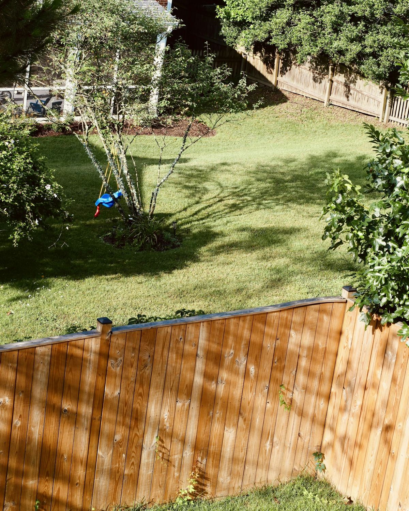
Fence 01
Wood privacy fences
Vertical boards on posts, closed up tight so the yard and the street stop seeing each other.
Cercas de privacidad
A&A Houston Fence — Houston, Texas
Wood privacy, horizontal cedar, wrought iron, chain-link and ranch rail — with gates — built along back yards, side yards, driveways and commercial lots across Houston.
Hablamos español
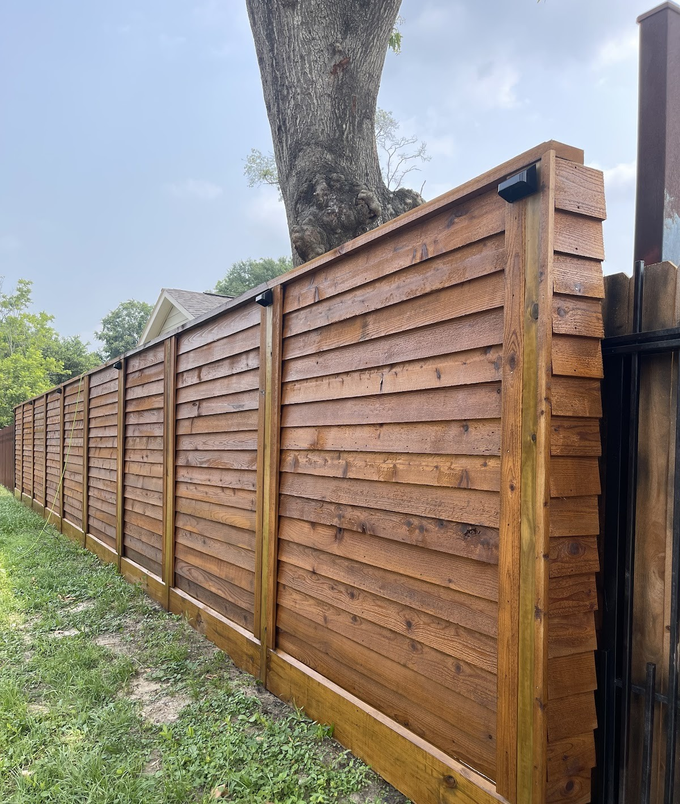
Cercas de madera, hierro, malla y ranchos — para casas y negocios
Material first
Cuatro materiales, cuatro trabajos
Every run starts by deciding what the fence is for: hide the yard, mark the line, let the wind through, or keep an animal off it. These are the four we build most, and each one is framed below in its own material.

Vertical boards on posts, closed up tight so the yard and the street stop seeing each other.
Cercas de privacidad
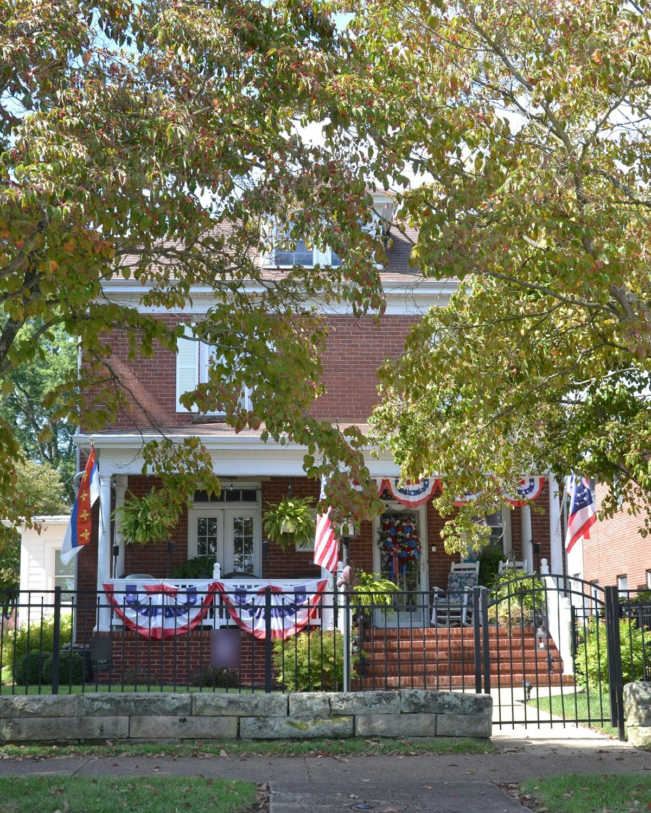
Steel pickets and scrolls that mark the line without hiding the house behind them.
Cercas de hierro forjado
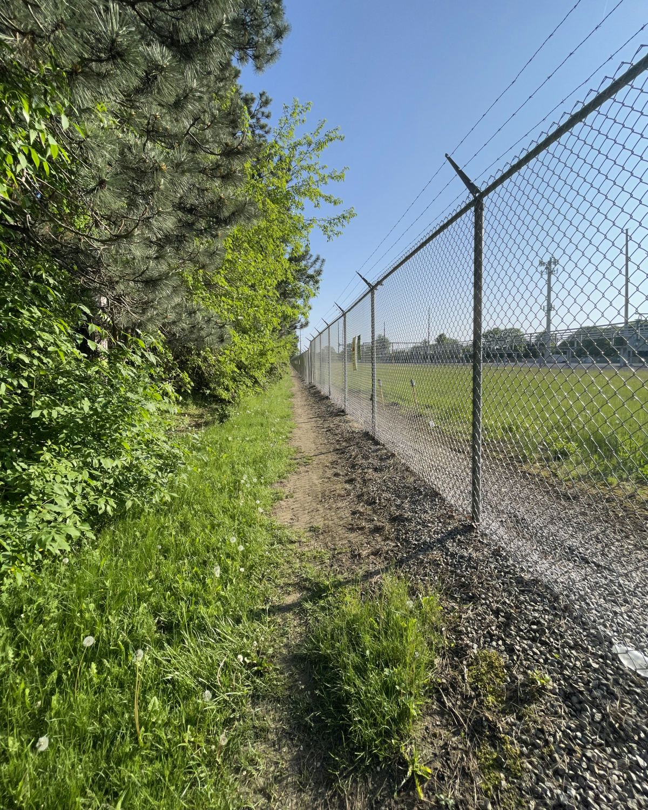
Galvanised mesh on steel posts, for lots, driveways and side yards that have to hold without going dark.
Cercas de malla galvanized
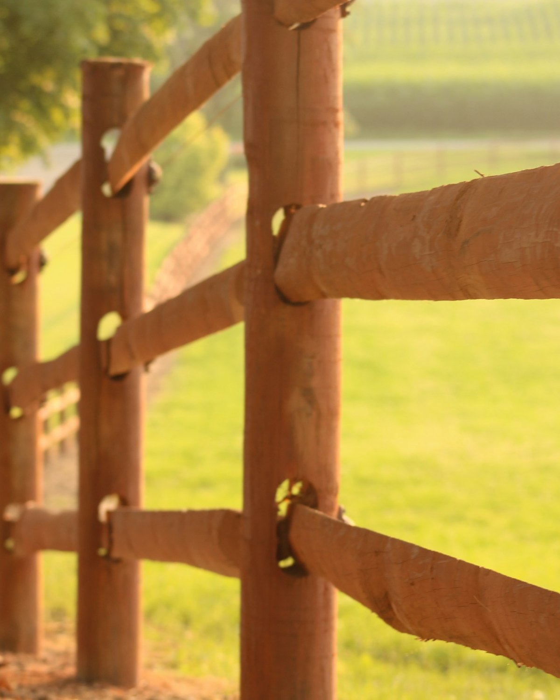
Split-rail and post-and-rail along pasture, open ground and long property lines. Marks the boundary, keeps the view.
Cercas de rancho y poste
The opening
La puerta de entrada
Most people judge a fence by the gate they walk through. Walk gates, driveway gates and pipe gates are hung on the line we are building, or matched to what is already standing there.
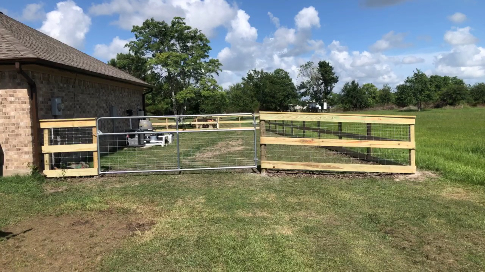
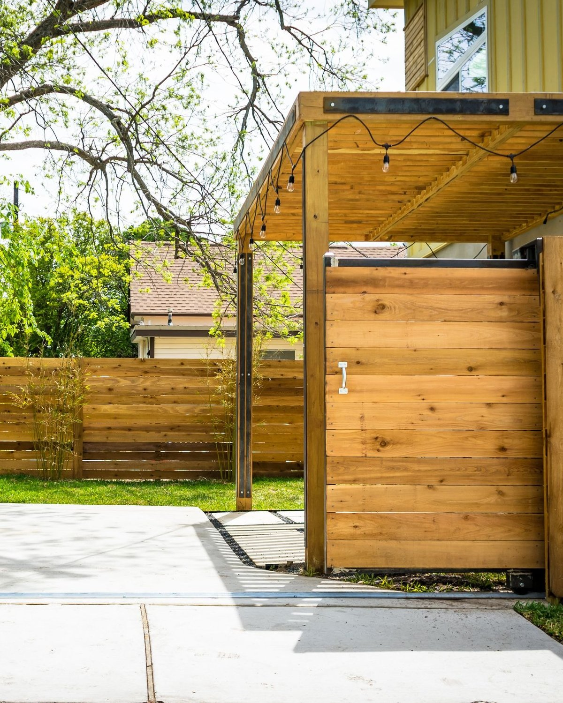
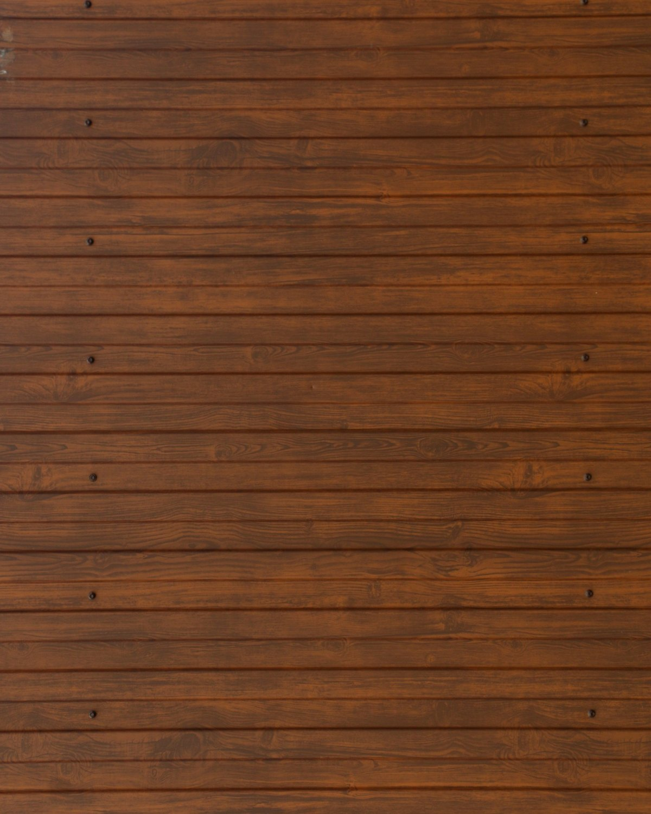
Experts in all types of fences, commercial and residential
Panels, one after another
Recorre la cerca, panel por panel
A fence line is not one material — it changes as it goes. Cedar where the house needs screening, iron at the front, mesh where a vehicle crosses, rails out on the open ground. Slide along the run.
Drag or slide to walk the panels — the posts between them are part of the fence.
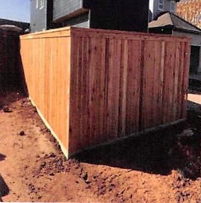
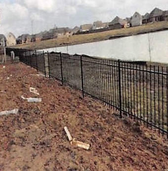
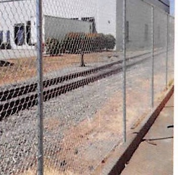
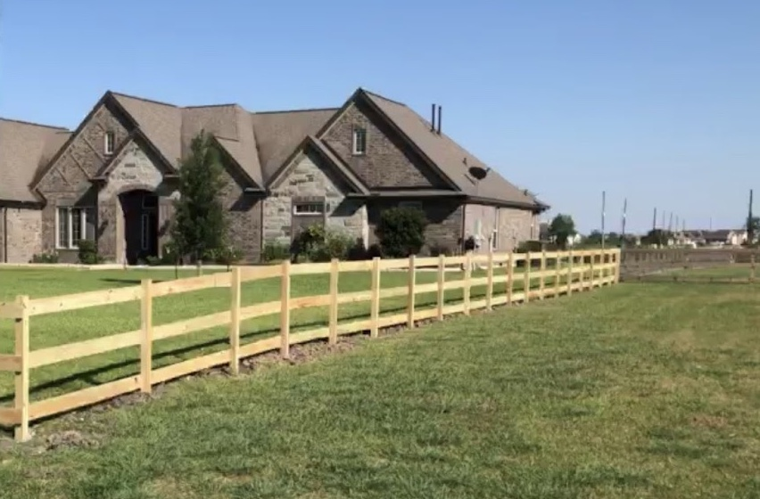
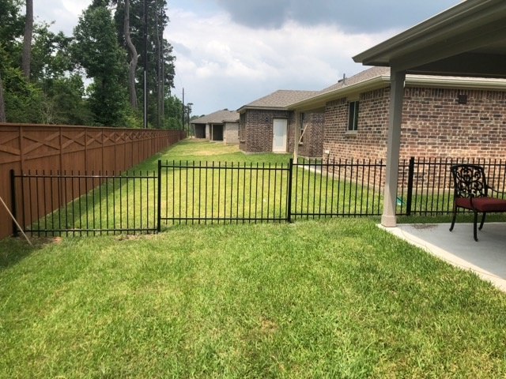
Four moves
Cómo se levanta una cerca
Nothing about it is secret and nothing needs a site visit to start. Send what you have, we read the line, and the posts decide the panels.
Same number for both. Say where the fence goes, what it is for, and what is already on the ground there.
Llame o escriba
We read the line, the ground and the neighbours, then talk through material, height, spacing and where the gates go.
Medimos y hablamos
Posts go in to the depth the ground needs, spaced to the panel width, then checked along the whole run with a string line.
Se colocan los postes
Boards or mesh go on, rails get fastened, and the gate is hung, squared and set to the ground it has to close over.
Paneles y puerta
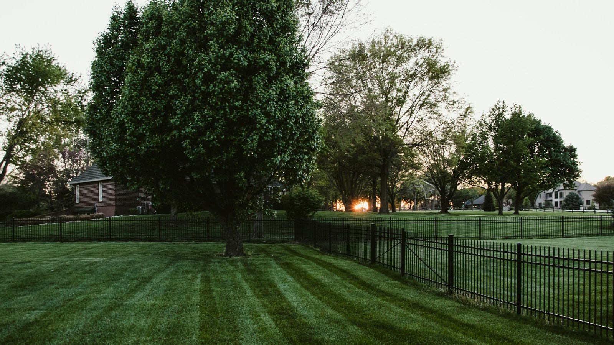
Call or text in English or Spanish — whichever is easier. / Llame o escriba en español.
On Google
Cinco estrellas en Google
The rating is on Google and the reviews are open to read. Have a look before you call — then call.
Llame, escriba o mande un mensaje
Mon-Fri 10 AM-5 PM, Sat-Sun closed, as listed on Google
Before you call
Cinco preguntas
The things people ask most, answered plainly. If yours is not here, ask it on the phone — that is faster than a form.
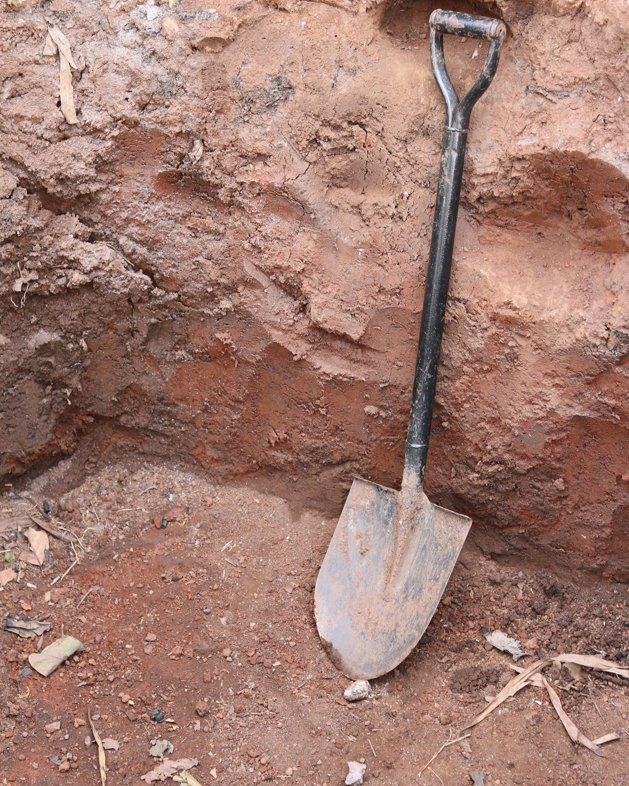
One from the street, one from inside, and a rough length of the line in feet, is enough to start.
Call (832) 988-5536Wood privacy and horizontal cedar hide the yard and the street from each other. Wrought iron and ornamental fences mark the line without blocking the view, so the house still reads from the sidewalk. Chain-link holds a boundary on a lot or beside a driveway and lets light and wind through. If you are not sure, send a photo of the line and we will say which one suits it.
¿Madera, hierro o malla? Depende de lo que quieras tapar.
A privacy fence is usually vertical boards on posts, and it works because nothing shows through. Horizontal cedar runs boards across the frame, so you see the shadow lines between them and the grain of the wood, and the framed top cap across the top is the detail that makes it read as finished. The fence at the top of this page is a horizontal cedar run.
La cerca horizontal lleva tablas de lado y un marco superior.
Gates are part of the fence, not an add-on. Walk gates, driveway gates and pipe gates get hung on the line we are building or matched to what is already there, with the fall checked across a driveway so the gate clears and the latch and drop set on the spot. Ranch land usually wants a gate wide enough to move a truck or a trailer through.
Sí — portones para el driveway y para el rancho.
Yes. Residential and commercial fencing is the same job with a longer run: side yards, driveways, parking edges, storage yards and rail frontage. Tell us the perimeter, whether vehicles go through it, and whether there are gates that need to work for equipment, and we will work from that.
Sí, hacemos trabajo comercial y residencial.
Two things help: a few photos of the yard or lot from the street and from inside, and a rough length of the line in feet. Add what the fence is for — privacy, a dog, a driveway, or marking the back of the property — and whether there is an existing fence or gate to match. Call or text (832) 988-5536.
Mande fotos del yard y la distancia aproximada de la cerca.